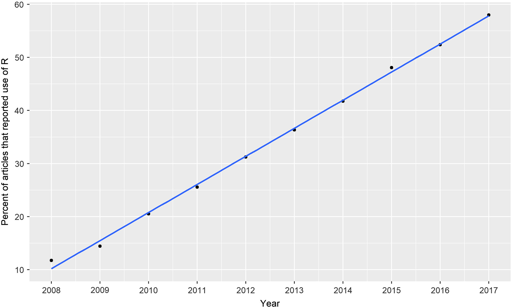
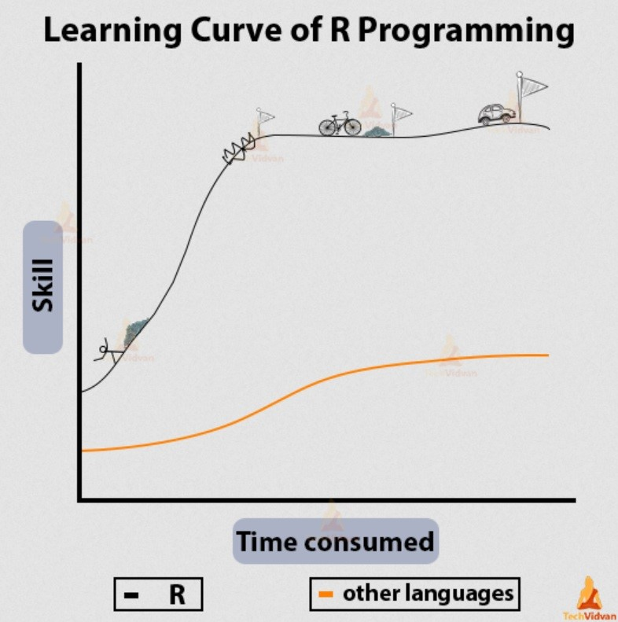

Mengapa menggunakan R?
Ekologi, yang merupakan studi tentang interaksi antara organisme dan lingkungannya, adalah bidang yang bergantung pada analisis data untuk memahami sistem ekologi yang kompleks. Beberapa program statistik yang biasa digunakan oleh praktisi ekologi selain lembar kerja Excel diantaranya adalah PAST, IBM dan MATLAB yang memiliki GUI (graphical user interface), yaitu tampilan tatap muka yang memudahkan pengguna untuk mengoperasikan program tersebut. Selain itu ada juga R dan Phyton yang merupakan bahasa pemrograman, dimana penggunanya menulis code untuk menghasilkan suatu perhitungan statistik.
Perkembangan terkini, banyak praktisi ekologi beralih ke bahasa pemrograman karena memudahkan mereka dalam menciptakan transparansi dan reproduksibilitas dibandingkan program yang memiliki GUI, dimana pengguna mencampur pemrosesan data dengan data itu sendiri (Ellison, 2010).
Dengan menggunakan bahasa pemrograman data awal terpisah dengan pemrosesan data itu sendiri, sehingga alur kerja analisis dapat terdokumentasikan dengan baik dan memudahkan orang lain untuk menelaah proses tersebut serta dapat mereplikasi analisis dengan mudah (Wilson et al., 2014).
R merupakan salah satu bahasa pemrograman yang banyak dipakai oleh ekologi, karena berbeda dengan Phyton yang awalnya diciptakan untuk membuat aplikasi, R dari awal didesain untuk analisis, sehingga secara organik, praktisi statistik dan ekologi cenderung menggunakan R. Dalam perkembangannya, banyak ekologis membuat paket analisis data mereka sendiri di R, hingga kini, lebih dari 100 paket telah dibuat untuk analisis data secara spesifik di bidang ekologi dan lingkungan (CRAN:Environmetric).
R dalam ekologi
Penelitian yang dilakukan oleh Lai et al. (2019) menunjukan bahwa sekitar 33% artikel ilmiah dalam jurnal-jurnal ekologi pada rentang tahun 2008 - 2017 secara eksplisit menggunakan R dalam analisisnya. Bahkan, dalam dua tahun terakhir, lebih dari 50% artikel ekologi menggunakan R. Banyak jurnal ekologi juga mengharuskan penulis untuk menyediakan code dalam publikasinya (Hampton et al., 2017; Mislan et al., 2016; Nosek et al., 2015).

Dengan menyediakan code dalam publikasi, data-data sensitif yang biasanya ada di dalam kajian ekologi dapat tetap terlindungi sementara proses analisisnya dapat dibagikan untuk menciptakan lingkungan akademik yang lebih transparan.
R dalam ekologi digunakan mulai dari analisis komposisi spesies dan multivariat untuk mempelajari interaksi organisme dengan lingkungannnya (Oksanen et al., 2007), berbagai macam pemodelan (Kellner et al., 2023; Sillero et al., 2023), hingga penerapan machine learning untuk mengidentifikasi spesies dari kamera intai (Tabak et al., 2019).
Mulai dari mana ?
Tantangan utama dalam mempelajari R adalah kurva pembelajarannya yang curam. Namun, banyak sumber belajar yang dapat membantu Anda memulai. Anda dapat memilih metode pembelajaran yang sesuai dengan preferensi Anda:

Beruntungnya, diluar sana banyak material pembelajaran yang dapat digunakan untuk memulai dan dapat diakses dengan gratis. Sebagai permulaan, untuk mempelajari R dari awal, kalian dapat merujuk pada sumber-sumber berikut ini;
- Bookdown; Adalah buku online yang bersifat dinamis, yang dibuat juga dalam program R seperti “Pengantar Pemrograman R dan RStudio” dapat menjadi bacaan awal yang baik.
- Video; Bagi kamu yang lebih suka belajar menggunakan media video, akun youtube Mega Bagus Herlambang dapat menjadi gerbang awal, karena penyampaiannya yang straightforward
- Interaktif; Kamu juga bisa mempelajari R di dalam R itu sendiri secara interaktif dengan menggunakan paket {swirl}
- Blog; Ada banyak blog dan penggiat media sosial lainnya yang membagikan tutorial dan tips menggunakan R dalam berbagai bidang. Kedepannya blog ini juga mungkin akan membagikan contoh-contoh analisis data ekologi menggunakan R
Seperti belajar bahasa asing, memahami bahasa pemrogaman R memerlukan pemahaman tentang “kosa kata,” latihan yang berulang, dan interaksi dengan komunitas;
- Vocab; Kamu perlu mempelajari operator-operator utama sebelum mengguakannya kedalam fungsi, seperti memahami kosa kata (vocab) sebelum menggunakannya dalam kalimat
- Reinforcement; Belajar dengan praktik menggunakan data sendiri dan melatihnya terus-menerus
- Languages are Social; Kamu akan belajar lebih cepat dengan bergabung, bahkan terlibat aktif dalam komunitas. Di Indonesia, salah satunya adalah Komunitas R Indonesia.
Kelebihan dan Kekurangan R
Kelebihan
Selain karena R merupakan program yang gratis, kelebihan lain yang ditawarkan adalah;
- Open-source; Sistem operasi yang kode sumbernya tersedia untuk publik dan boleh dimodifiikasi, sehingga banyak komunitas dari berbagai disiplin ilmu turut berkontribusi aktif untuk mengembangkan paket-paket dan program statistik yang dibutuhkan secara spesifik pada disiplin ilmu tersebut. Kamu pun dapat membuat fungsi atau mengembangkan modifikasi dari analisis statitistik yang sudah ada.
- Cross platform compatibility; R dapat digunakan di operating system manapun seperti Windows, Linux bahkan Android sekalipun. Data yang bisa digunakan dan diproduksi dalam program ini pun sangat beragam dari mulai excel spreadsheet seperti
csvdanxlshingga data-data spasial seperti shapefile (shp) dan raster (tif). Bahkan R juga dapat diintegrasikan dengan bahasa pemrograman lainnya seperti C++, Java dan Phyton. - Powerful graphic; R dapat membuat grafik indah dari yang statis hingga visualisasi data yang interaktif dan dinamis.
- Quarto; Dokumentasi multi-language versi pengembangan terbaru dari Rmarkdown untuk membuat laporan, presentasi, buku bahkan blog ini sekalipun dibuat menggunakan quarto. Output filenya juga beragam mulai dari
html,pdf,docx,epubdll. Akademia juga menggunakan fitur ini untuk menulis artikel ilmiah maupun tesisnya, karena kamu bisa menulis, analisis dan visualisasi data di dalam lingkup R secara sekaligus.
Kekurangan
- Steep learning curve; Mempelajari R untuk pertama kali biasanya agak sulit untuk seseorang yang belum pernah mempelajari bahasa pemrograman sama sekali, bahkan ada istilah R makes easy things hard, and hard things easy.
Pembahasan
Penggunaan R dalam ekologi telah berkembang pesat dalam beberapa tahun terakhir karena transparansi, reproduksibilitas, dan kekuatan analisisnya. Meskipun ada kurva pembelajaran yang curam, manfaat jangka panjangnya dalam penelitian ekologi membuatnya menjadi alat yang sangat berharga bagi praktisi ekologi